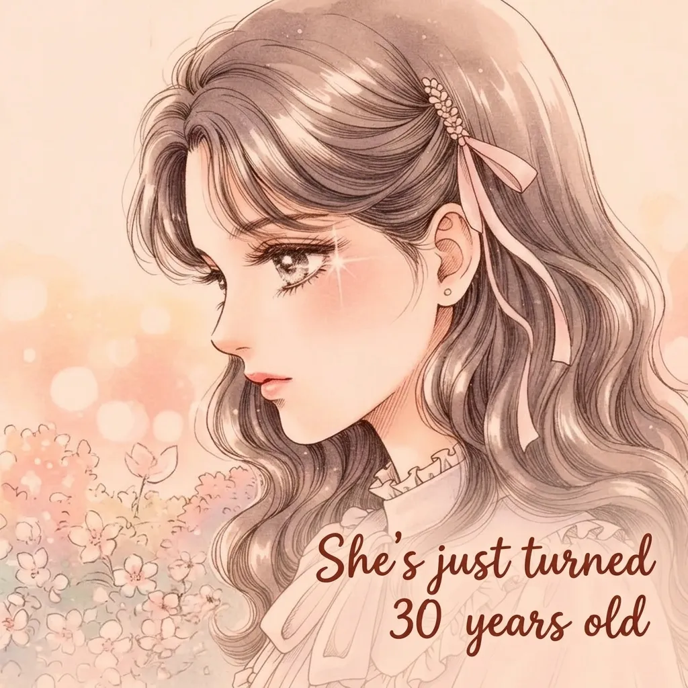
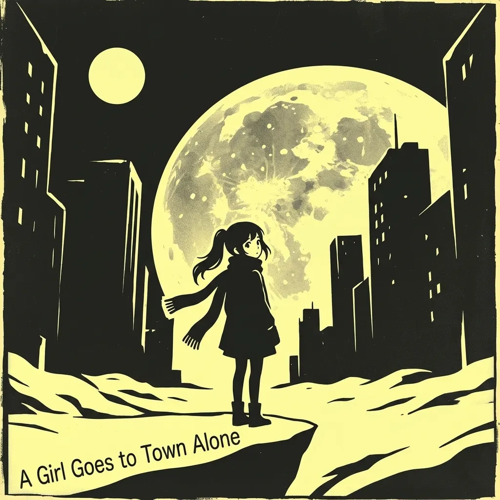
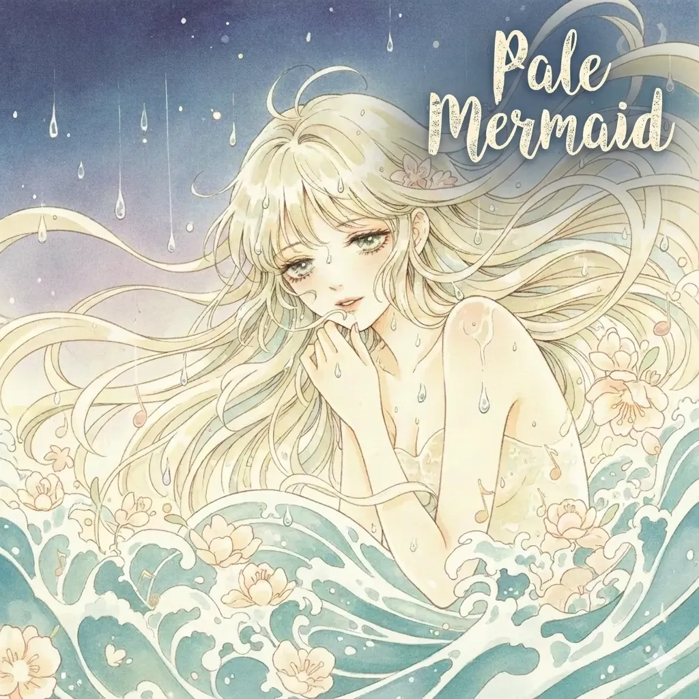
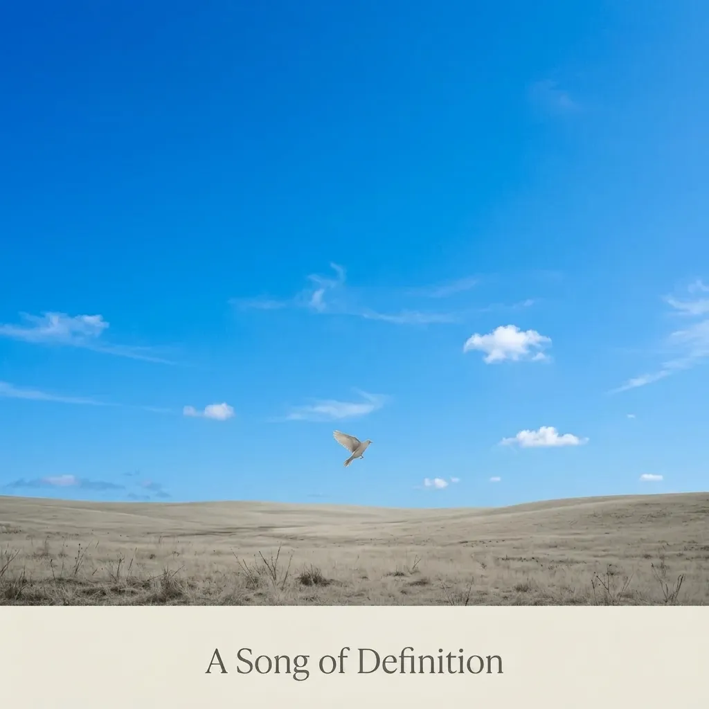
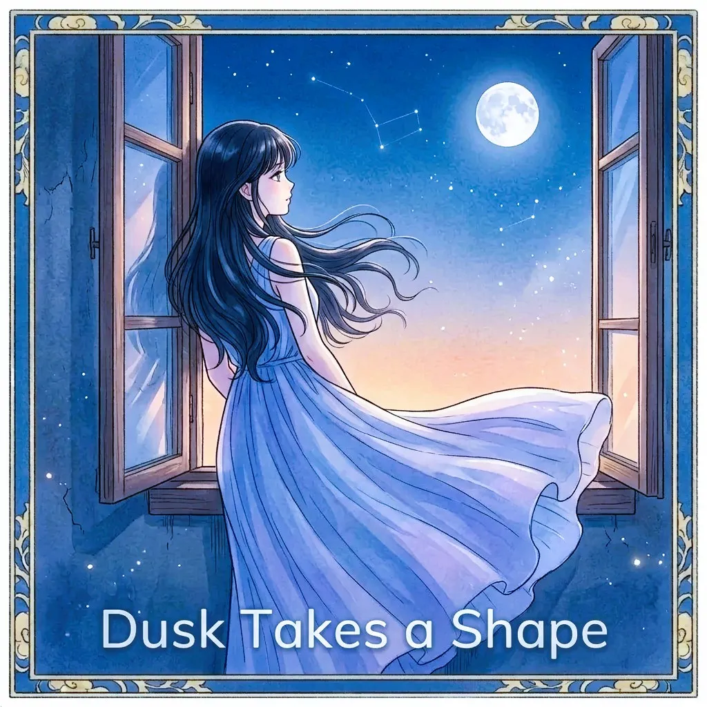
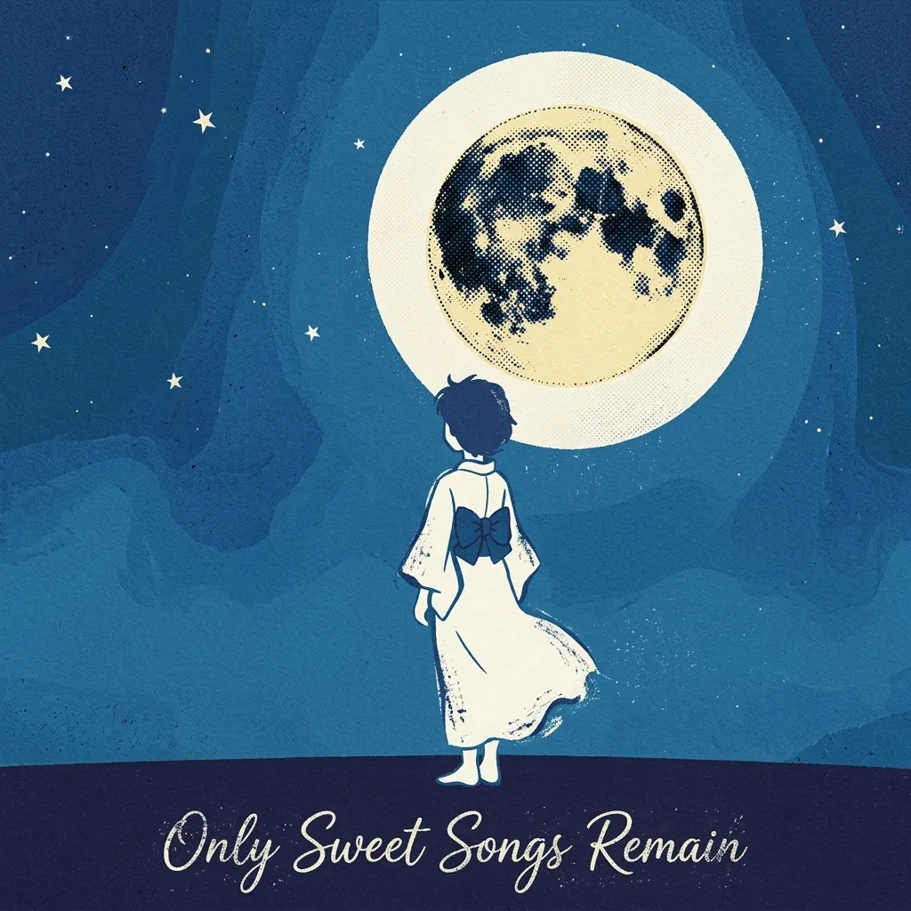
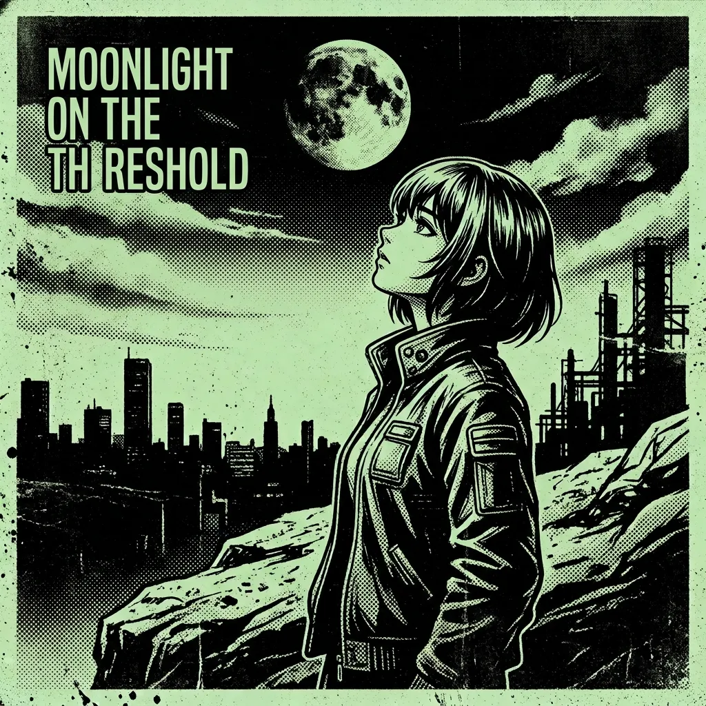

Works
- One Sunny Day
- Gathering Your Pieces
-
 The Most Beautiful
The Most Beautiful
- Like a Feather
-

She's Just Turned 30 Years Old -

A Girl Goes to Town Alone -
 Everything You Do While You're Asleep
Everything You Do While You're Asleep
-
 Drowning in Blue Skies
Drowning in Blue Skies
-

Pale Mermaid -

A Song of Definition -

Dusk takes a shape -

Only Sweet Songs Remain -

Moonlight on the Threshold -
 Then I'll Be You
Then I'll Be You
-
 You Are My Angel
You Are My Angel
- Watching the Castle Tremble
About
Hayato.M (Lyrics & Music)
I was born in 1975.
At 16, I was baptized by rock 'n' roll. From the age of 20, I also came to love classical
music, and I earned a master's degree in literature for my work on Bach's Passions and
cantatas.
The music I love also covers a wide range, including hard rock and heavy metal, jazz, idol
pop, and shoegaze/dream pop.
It is no exaggeration to say that I live to listen to good music. For me, music is
everything.
Rather than relying on what critics say, I value listening closely with my own ears. A song
I have heard hundreds of times can suddenly sound completely different one day. I believe
that this endless depth, which can never be fully explored, is the true charm of great
music.
I began writing my own songs in my twenties. Recently, I have been adapting my songs into
English, arranging them with the AI music generator Suno, and releasing them worldwide.
My theme is love. The words of each song are traces of my struggle to capture in language a
never-ending spring of love.
Hayato.M（作詞・作曲）
1975年生まれ。
16歳でロックンロールの洗礼を受ける。20歳よりクラシックにも親しみ、バッハの受難曲・カンタータの研究で文学修士号を取得。
ほかにもHR/HM、ジャズ、アイドルポップ、シューゲイザー/ドリームポップと、愛聴する音楽は多岐にわたる。
「良い音楽を聴くために生きている」と言っても過言ではないほど、音楽がすべて。
評論家の評価に頼らず、自分の耳で聴き込むことを大切にしている。何百回と聴いた曲なのに、ある日突然まったく違って聴こえるような、そんな汲み尽くせない魅力があることが優れた音楽の証拠だと考える。
20代から自作曲の制作を始める。近年、自作楽曲の日本語詞を英詞に翻案し、音楽生成AI「Suno」でアレンジしたものをグローバルに発表。
テーマは「愛」。各楽曲の詩は、汲めども尽きない愛の源泉を言葉で捕らえようと試みた苦闘の跡。